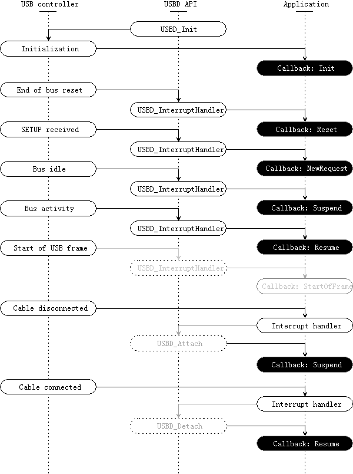

Description
device.dir::USBD Callback API
Callback API
The callback API is a means of communication between the user application and the USBD API. When particular operations must be performed, the USB driver calls serveral external functions, refferred to as
callbacks. They can also be invoked to notify the user application of pending events.
Defining all callbacks is not mandatory. For example, if the device shall not enter low-power mode, then it is appropriate not to provide a Suspend callback. If a callback is mandatory, this is notified in its description.
Callback Invocation
The following events can trigger a callback:

Callback Invocation Flowchart
Init
The
USBDCallbacks_Initialized callback is invoked when the
USBD_Init method is called. It has to perform several mandatory steps to make it possible to use the API:
- If an OS is used, perform any specific operation to install the driver
- Configure USB controller interrupt
- Configure Vbus monitoring PIO and interrupt ( but it's in app layer now ) The USB controller interrupt must be configured to call the USBD_InterruptHandler API function when triggered. This is necessary to have events happening at the USB controller level handled appropriately by the API.
If a PIO pin is connected to VBus, it is possible to monitor it by configuring the pin as an input and enabling the PIO interrupt. The interrupt service routine should simply check the Vbus status and then call the
USBD_Connect and
USBD_Disconnect function to put device into right state.
Finally, if an OS is being used, then the driver should probably be installed prior to use. Interrupt configuration may also be done differently. Please refer to the documentation of the OS for more information.
This callback is mandatory.
Reset
When an End of bus reset has been detected, the
USBDCallbacks_Reset callback is triggered. The callback should perform
initialization or
re- initialization of the user-level application. For example, a class driver like MSD should re-initialize its internal
state when a USB reset is performed.
Suspend
When the USB device enters the Suspended
state, the USB API notifies this
state change by invoking the
USBDCallbacks_Suspended callback. This can happen either when the bus is idle or when the device is disconnected from the USB.
If the device should enter low-power mode when suspended, then this callback must perform the required operations to do so, e.g., switching to a slow clock, disabling PLLs, etc.
- Note: The electrical specification of the USB 2.0 defines a maximum current consumption of 500uA for suspended device. This includes the current passing through pull-ups and upll-downs.
Resume
The
USBDCallbacks_Resumed callback is invoked when the USB device leaves the Suspended
state and returns to its previous
state (either Powered, Default, Address or Configured). This may happen when activity is detected on the USB, or when the device gets connected.
If the device was in low-power mode because of the Suspend callback, then this callback must perform the necessary poerations to return the device into a normal operation mode, e.g., switching to a fast clock.
NewRequest
When a SETUP request is received on a control endpoint, the USBD API layer triggers the
USBDCallbacks_RequestReceived callback to notify the user application. The received request can then be accessed through the corresponding
USBGenericRequest structure.
SETUP packets are used for class-specific requests (e.g. GetMaxLUN in MSD) as well as standard USB requests (e.g. SetConfiguration). The former are described in USB Device Class Documents, such as the Mass Storage Bulk Only 1.0, the latter are defined in the USB Specification 2.0.
- Note: that SETUP requests which are not understood by the device should be acknowledged with a STALL handshake. This notifies the host that the device cannot process the command.
This callback is mandatory.
StartOfFrame
Every 1ms (for a full-speed device) or 125us (for a high-speed device) a new USB frame starts. A callback can be invoked whenever this occurs.
Because the start-of-frame interrupt puts some stress on the processor (since it is called a lot), it is only activated the corresponding callback is defined (now it's NOT defined in current framework).
Source
The documentation for this Page was generated from the following file:
device.dir